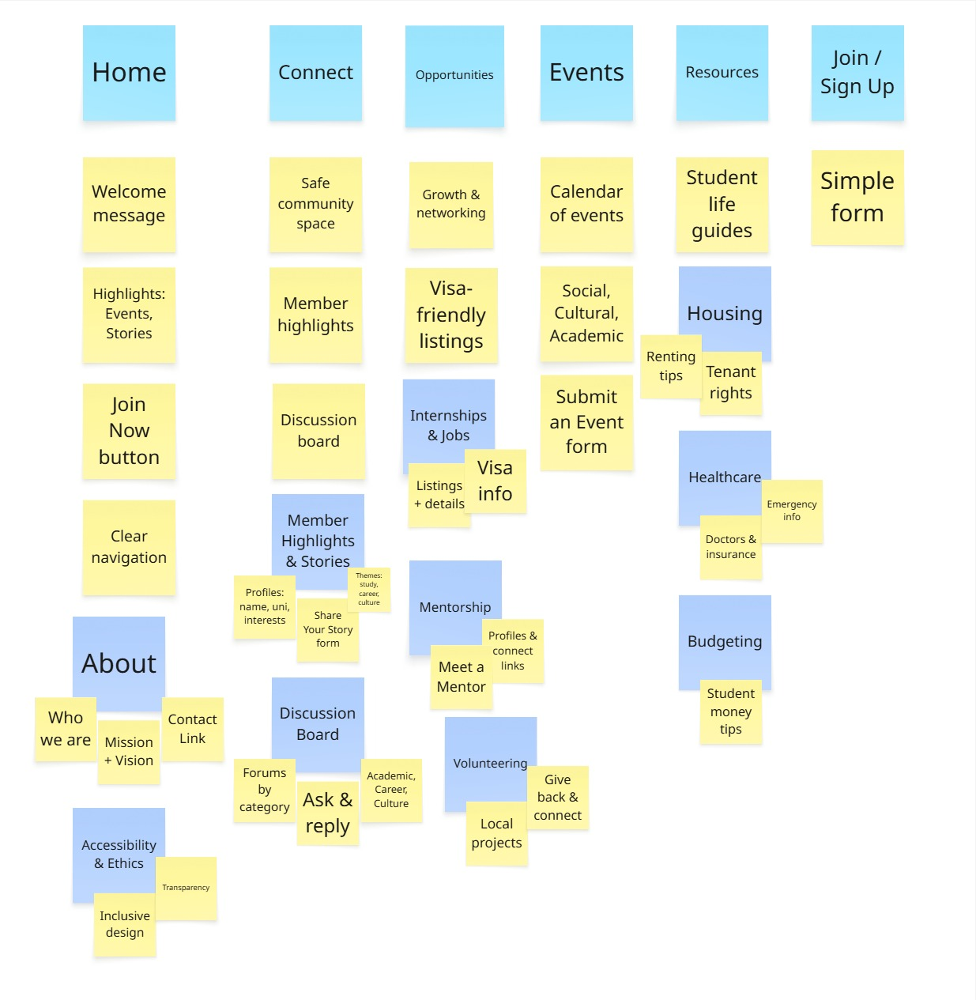

Site Map
A visual overview of the site structure and navigation hierarchy for Global Community Connect.
Site Map Activity
This image shows the initial card sorting exercise for creating the sitemap structure for the Global Community Connect site.
Global Community Connect Site Map
Click on each section to view page descriptions about pages and sub-pages in the sitemap.
The home page welcomes visitors with the landing section. It highlights upcoming events, showcases recent community stories, and features a prominent "Join Now" button. This page will give members an immediate sense of what the community offers and makes them want to explore further through engaging visuals and clear navigation.
This page explains who we are and what we stand for at CCI, featuring our mission and vision statement about building Academic & Professional Networks. It will highlight our commitment to inclusivity and ethical design, helping users understand our values and building trust. There's also a link to our contact form for feedback, making it easy for people to reach out with questions or suggestions.
This page explains our accessibility features, how we moderate content to keep the community safe, and our ethical commitments like not running ads and designing inclusively. Being open about our values and practices helps people trust us and feel confident about participating.
This is where the core page of the website. The Connect page explains who can join and why it's a safe space, displays member highlights showing real students and alumni with their stories. There's also a discussion board where members can ask questions and connect with people who understand what they're going through as international students.
This subpage features member profiles showing their name, university, interests, and personal stories. The "Share Your Story" form makes it easy for anyone to contribute their experiences, organized by themes like academic success, career transitions, or cultural adaptation.
A simple forum where community members can start conversations and reply to threads. Topics are organized into categories like Academic Support, Career Advice, and Cultural Exchange, making it easy for members to find answers to their questions.
This section helps students and alumni grow professionally through internship and part-time job listings that consider visa requirements, a mentorship program where alumni can guide current students and can find someone who's been in their shoes, and volunteering opportunities that help integrate into their new community.
This section features job and internship listings with all the important details like requirements, location, and whether they're visa-friendly.
The "Meet a Mentor" section introduces experienced alumni and professionals who want to help. Each mentor profile shows their expertise, background, and how to connect with them.
Community projects and volunteering opportunities that help international students give back and meet locals. Perfect for someone who wants to feel more connected to their new home.
A calendar list of upcoming events where members can practice their social skills and make friends, and where they can promote cultural celebrations. The page includes a "Submit an Event" form so community members can organize their own meetups. Events are color-coded by type - social, professional, cultural, or academic.
Practical guides that help international students navigate everyday challenges like finding housing, understanding healthcare, managing money, and getting around the city. The content is written in simple, clear language that can be understood even with limited English, and includes multilingual headings where helpful.
Everything a member needs to know about finding a place to live, understanding rental agreements, knowing their rights as a tenant, and staying safe. The guide is set up as a step-by-step checklist so the overwhelming process of finding housing feels more manageable, with links to trusted resources and tips from other community members.
A simple guide to the local healthcare system using simple language explaining how to find doctors, use insurance, and access emergency services. Critical information like emergency numbers and hospital locations will be displayed prominently.
Money management tips designed for students on tight budgets, covering typical expenses, banking basics, student discounts, and saving strategies. Infographics and visual breakdowns make financial information less scary and easier to understand.
The signup page explains what you get by becoming a member and features a simple form asking for just the basics like name, email, university, and interests.